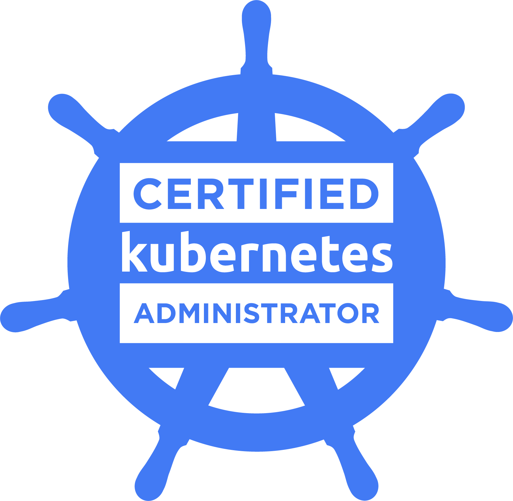
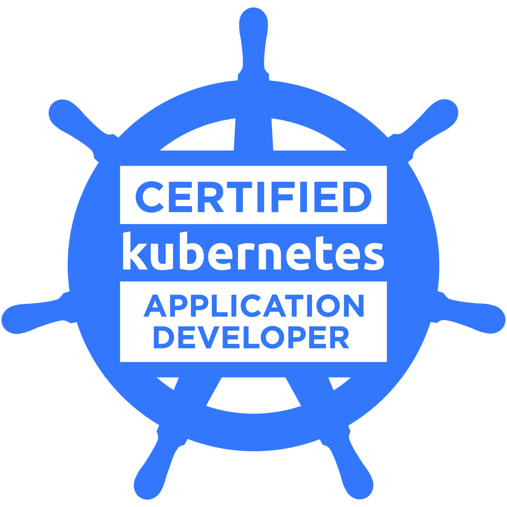
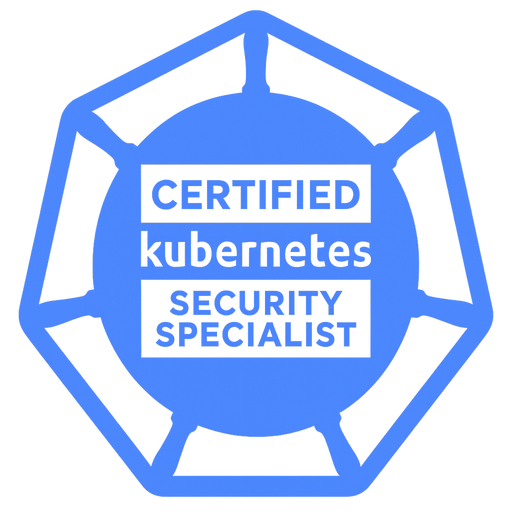

Certifications
-

Certified Kubernetes Administrator (CKA)Score: 91/100
-

Certified Kubernetes Application Developer (CKAD)Score: 81/100
-

Certified Kubernetes Security Specialist (CKS)Course in progress
Work Experience
Spindox S.p.A. Cloud Native Engineer
Client: Carnival Corporation World's largest cruise operator
I currently work within the Global Maritime Information System department, which manages the
entire corporation's infrastructure, composed of a combined fleet of over a hundred vessels
across tens of cruise line brands.
My main role is to ensure that all Kubernetes clusters on Azure and on-board (VMware) are
secure,
up-to-date and healthy.
DevOps
- Constantly collaborate with development and release teams when it comes to Kubernetes environment.
- Troubleshoot every possible issue that applications could encounter, from deployment pipeline issues (on Azure DevOps) to runtime problems.
Day 1 Ops
- Provision and configure new Kubernetes clusters using Infrastructure as Code (Terraform and Ansible Automation Platform), including critical add-ons, such as distributed storage, private container registry and load balancers, to deliver a production-ready environment tailored to business requirements.
- Integrate and deploy new services that enhance clusters' capabilities and satisfy evolving business requirements (e.g. KEDA, InfluxDb, Grafana).
- Design and deploy containerized cluster services to fulfill specific operational needs (e.g. a secure file transfer service across all the clusters), ensuring compliance with corporate security policies.
Day 2 Ops
- Perform periodic updates of Kubernetes clusters along with essential system-level components, minimizing downtime and ensuring system reliability, security and version consistency across all environments.
- Continuously and proactively monitor clusters and workloads to instantly identify and fix issues or escalate to vendors where necessary.
- Design and assess resource optimization strategies, to prevent over- and under-provisioning and reduce cloud spend without affecting performance.
- Review Orca/Qualys vulnerability scan reports and validate security patching plans for keeping the entire infrastructure secure and up-to-date.
Kiratech S.p.A. Cloud Native Engineer
-
Client: CSI Piemonte S.p.A. Public consortium providing IT services for public administration in the Piedmont region (Italy)
I provided best practices and security recommendations for provisioning and maintaining a cluster of HashiCorp Vault nodes, specifically I:
- hardened cluster nodes and bash scripts
- automatic updates
- automated leader election for reliable failover
- enabled auto unseal
- implemented a robust backup and restore strategy
-
Client: Intesa San Paolo S.p.A. One of the largest European banking groups
Maintained, extended and optimized a highly available HashiCorp Vault infrastructure, fully compliant with the PCI DSS standard.
More specifically, I:- integrated Vault into CI/CD pipeline (Jenkins)
- retrieved secrets from Vault for OpenShift workloads
- provided suggested metrics for monitoring cluster's health and set up alerting
- set up the disaster recovery procedure
- Hardware Security Module integration
- created Ansible playbooks to manage the entire Vault nodes' lifecycle (hardening, provisioning, PKI setup, basic configuration, updating, uninstalling)
- implemented a centralized web dashboard to monitor license limits, count active entities and alert stakeholders when thresholds are reached
-
Client: YOOX Net-a-Porter Group S.p.A. Global luxury fashion e-commerce
As HashiCorp Vault consultant my task was to foster the adoption of a Global Secrets Management Solution across all enterprise departments.
Specifically, I:- kept the entire Vault HA infrastructure (comprising 30 EC2 nodes) updated, healthy and secure
- maintained a custom credentials broker that interacts with Vault and Jenkins credentials store
- observed Vault infrastructure using Splunk (for credentials auditing)
- created AWS Lambda functions for automating recurring operations, such as moving secrets between namespaces and clusters and retrieving detailed usage information
- onboarded internal teams onto GSMS, collaborated with engineering, InfoSec and DevOps stakeholders to gather requirements, define access controls and provision isolated namespaces with appropriate policies
-
Client: Punch Torino S.p.A. Engineering company specialized in automotive systems, formerly the Italian General Motors Engineering Center
As AWS consultant, I assisted the customer in navigating the complexities of the cloud ecosystem, by providing tailored and technical guidance on infrastructure, security and automation. Specifically, I:
- designed and implemented a centralized backup and disaster recovery solution using AWS Backup across EC2, EBS and RDS resources
- managed the Atlassian suite lifecycle, including provisioning, configuration, restoration from backup, periodic updates, integration with OpenSearch
- PostgreSQL RDS and OpenSearch upgrades
- set up autoscaling for EC2 nodes hosting Atlassian apps
- Application load balancers (L7) configuration
- monitored cloud spend and set up alerts
- CI/CD platform (CloudBees) migration and upgrade on EKS
- designed and deployed log processing pipelines using BanzaiCloud Logging Operator in Kubernetes to normalize, parse and enrich application logs before forwarding them to Elasticsearch
-
Client: Euronext N.V. Main European stock exchange operator
Led the adoption of HashiCorp Vault on OpenShift clusters running on IBM Power nodes.
Overcame architectural compatibility issues and aligned Vault’s deployment with platform constraints, across diverse containerized environments. -
Client: Alpitour S.p.A. Italy’s leading travel and tourism group
I provided on-call support for OpenShift environments.
Specifically, I:- diagnosed and fixed incidents involving production workloads within defined SLAs (often in war room sessions)
- used Dynatrace for monitoring, alerting and root cause analysis
- post-incident reviews to define precautionary actions to improve platform resilience
Arpanet Italia S.r.l. - Milan (Italy) Founder, Managing Director and Network Engineer
Founded and managed a Wireless Internet Service Provider, providing high speed internet
access in both urban and remote areas to individuals, businesses and public institutions.
From a small customer base, I assisted the exponential growth towards thousands of customers
and tens of Points of Presence countrywide.
Specifically, I was responsible for:
- designing and building the entire network infrastructure from scratch
- fault management, QoS, service assurance and delivery
- automating the provisioning and configuration of network devices (Mikrotik, Juniper, Ubiquiti) using Python, Terraform and AWS
- leading a development team for creating an all-in-one ERP solution for ISPs using Django, Bootstrap and jQuery (CRM, CMS, customers/employees management, simple and recurring billing system, ticketing system, financial reporting)
- the financial, commercial, accounting and tax management of the company (extensive use of Microsoft Word and Excel)
- management of customers and relations with suppliers
- employees management and workplace safety
Escomputers - Acate (Italy) Founder and Owner
My first experience as a tech entrepreneur was with a small one-person business specialized in:
- sale of computers and smartphones along with hardware and software assistance
- website development using Django and Bootstrap
- installation and maintenance of security and IP video surveillance systems for individuals, businesses and public institutions
- network optimization and IT support (both hardware and software solutions) for medium to large infrastructures, including local businesses, schools and municipalities
- management of customers, employees and suppliers
A.C.F. S.r.l. - Acate (Italy) Telecommunications Field Technician
My first job in ICT field, providing technical on-site support on public telecommunications infrastructure to ensure customer connectivity:
- installation of ADSL, SHDSL, POTS-RTG, VoIP, ISDN lines on behalf of major Italian ISPs (Vodafone, TIM Group, Wind Telecom etc)
- fault repair across all layers of the public telephone network, from PSTN central offices to roadside distribution cabinets and junction boxes, up to customer premises
Skills Map
| Operating Systems | |
| GNU Linux |
|
| Windows |
|
| Infrastructure as Code | |
| Terraform |
|
| Ansible Automation Platform |
|
| Cloud Providers | |
| AWS |
|
| Azure |
|
| GCP |
|
| Containers Orchestration | |
| Kubernetes |
|
| K3S |
|
| OpenShift |
|
| Rancher |
|
| Complementary Components | |
| Harbor Registry |
|
| Longhorn |
|
| Velero |
|
| Tyk |
|
| HAProxy |
|
| Helm/Kustomize |
|
| GitOps & CI/CD | |
| Git |
|
| GitHub |
|
| GitLab |
|
| Bitbucket |
|
| Azure DevOps |
|
| Jenkins |
|
| ArgoCD |
|
| Project Management | |
| Jira |
|
| Confluence |
|
| Databases | |
| MariaDB Galera |
|
| PostgreSQL |
|
| MySQL |
|
| MongoDB |
|
| DynamoDB |
|
| Virtualization & Containerization | |
| VMware vSphere |
|
| Nutanix |
|
| Docker |
|
| Podman |
|
| Buildah |
|
| Programming & Web | |
| Python |
|
| Bash |
|
| Golang |
|
| JavaScript |
|
| HTML5 |
|
| CSS |
|
| Django |
|
| RouterOS |
|
| Monitoring & Observability | |
| Dynatrace |
|
| Splunk |
|
| Fluentd |
|
| Prometheus & Grafana |
|
| Secrets and Identity | |
| HashiCorp Vault |
|
| Security Tools | |
| Snyk |
|
| Trivy |
|
| GitGuardian |
|
| Checkov |
|
| Qualys |
|
| Orca Security |
|
| Languages | |
| Italian | Native Speaker |
| English | B2 |
Education
Radio Elettra Private School - Rome (Italy)
Officially recognized under Italian Law (Art. 14, Law 845/78) by the Province of Perugia, Umbria Region (Resolution No. 8097 - 2003/12/18)
I completed a 350-hour training program that covered both theoretical lessons and hands-on lab work, including:
- semiconductor simulation
- analog and digital electronics
- computer architecture
- microprocessors
- applied electrical engineering and basic programming
I passed the related final oral and written exam with a score of 90/100.
Secondary School Diploma (Humanities Studies Track), S. Cannizzaro High School - Vittoria (Italy)
The curriculum included physics, mathematics, chemistry, literature, philosophy,
Latin, ancient Greek and humanities.
The institution is known for its rigorous education fostering critical thinking
skills and teaching effective study methods.
I graduated with a final score of 78/100.
British Study Centers London Hampstead (UK)
I was awarded a scholarship for an advanced English course focused on both written and spoken communication with native speakers.
I achieved an "Upper Intermediate" level certificate after a written and oral examination with the following scores:
- Speaking 4/5
- Listening 4/5
- Reading 4/5
- Writing 4/5
Highlights of the course activities:
- participated in daily debates and role-play exercises to improve fluency in real-world scenarios
- led short presentations on cultural topics to native speaking audience
- engaged in writing workshops, providing and receiving feedback to refine written communication
- took part in listening sessions using authentic English audio (mostly interviews and films)
- prepared and passed a mock job interview, receiving feedback from native speakers
The teacher's and director's remarks were:
"Very well behaved, active participation, able to use English in a variety of everyday
situations."
— John Ben Solieau (Teacher)
— Paul Evans (Director of Studies)
Interests
I'm deeply interested in emerging technologies, particularly:
-
blockchain technology and cryptocurrencies
I believe it’s one of the most promising and revolutionary innovations of our time. Its potential goes far beyond cryptocurrencies.
I think it has a lot of real-world applications across various industries, such as product traceability in the food supply chain.
So, I actively follow its evolution and regularly seek high-quality and out-of-the-box white papers that can improve and optimize existing processes.
I occasionally engage in cryptocurrency scalping to stay sharp on trading strategies and market dynamics. -
IoT
I am also involved in various IoT projects using Home Assistant for home automation, as well as indoor and outdoor farming systems.
These include environmental and soil monitoring, smart irrigation and indoor plant cultivation setups.
I love traveling because it gives me the chance to meet new people and learn from their experiences and perspectives.
I've been playing guitar since I was a teenager and I enjoy riding fast motorcycles,
especially on challenging tracks.
Basketball is another major passion of mine.